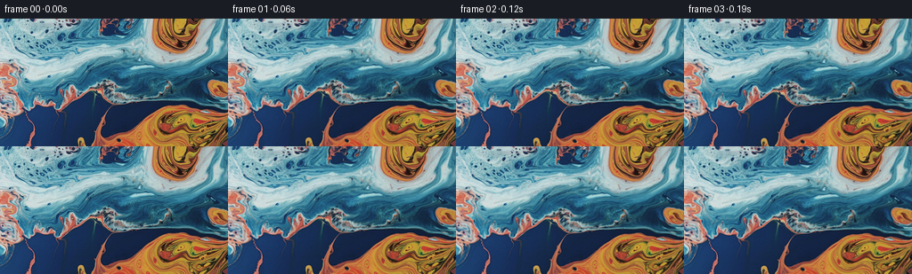
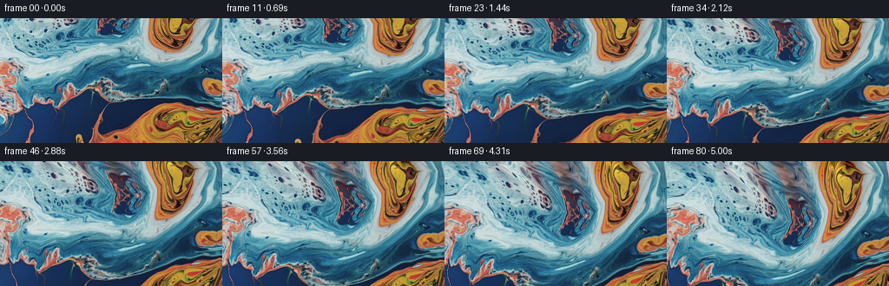

CODING AGENTS AS PIXEL WORLD MODELS
traex/GPT-6.1-Sol · 0003_s3
点击播放 · 原生 RGB 像素
逐轮保存的候选
回放视频、检查图与代码变化。
每份候选均可单独播放。实际图片检查记录在下方工具轨迹中。
候选 01播放与检查图
点击播放 · 原生 RGB 像素


展开代码变化
--- 上一保存版本
+++ 本次保存版本
@@ -0,0 +1,190 @@
+"""Generate an image-conditioned macro shot of flowing colored liquid.
+
+All appearance comes from first_frame.png. A smooth, divergence-free flow
+transports its pigment/reflection texture, while a pinhole camera tilts up.
+The texture is sampled only once per frame (not successively resampled).
+"""
+
+from pathlib import Path
+import json
+import math
+import shutil
+import subprocess
+
+import numpy as np
+from PIL import Image
+from scipy.ndimage import gaussian_filter, map_coordinates, spline_filter
+
+import artifact_io
+
+
+ROOT = Path(__file__).resolve().parent
+
+
+def sample(image, x, y, order=3, prefilter=True):
+ coordinates = np.stack((y, x))
+ return np.stack(
+ [map_coordinates(image[..., c], coordinates, order=order,
+ mode="reflect", prefilter=prefilter) for c in range(3)],
+ axis=-1,
+ )
+
+
+def make_texture(image, margin=88):
+ """Continue the edge's colors and fine liquid texture beyond the crop.
+
+ The top color field is smoothly extrapolated, rather than duplicated;
+ existing fine-scale texture is reused with a gradually changing shear.
+ Only the newly revealed part of the upward camera view uses this border.
+ """
+ h, w = image.shape[:2]
+ y, x = np.mgrid[-margin:h + margin, -margin:w + margin].astype(np.float32)
+ low = gaussian_filter(image, sigma=(5.5, 5.5, 0), mode="reflect")
+ detail = image - low
+ canvas = sample(image, x, y)
+ outside = y < 0
+ depth = np.maximum(-y, 0)
+ bent_x = x + 0.27 * depth + 2.0 * np.sin(depth / 11) * (1 - np.exp(-depth / 7))
+ detail_y = 0.87 * depth + 0.8 * np.sin(depth / 12)
+ reused_detail = sample(detail, bent_x, detail_y)
+ edge_color = sample(low, bent_x, np.zeros_like(y))
+ inward_color = sample(low, bent_x, np.full_like(y, 8))
+ slope = np.clip((inward_color - edge_color) / 8, -1.2, 1.2)
+ distance = 22 * (1 - np.exp(-depth / 22))
+ extended_low = edge_color - distance[..., None] * slope
+ # At greater distances, keep the extension within the original palette.
+ nearby_color = sample(low, bent_x, detail_y)
+ blend = 0.13 * (1 - np.exp(-depth / 45))
+ extended_low = extended_low * (1 - blend[..., None]) + nearby_color * blend[..., None]
+ extension = extended_low + reused_detail
+ canvas[outside] = extension[outside]
+ canvas = np.clip(canvas, 0, 255)
+ # Ensure the supplied rectangle is untouched in the texture atlas.
+ canvas[margin:margin + h, margin:margin + w] = image
+ coefficients = np.stack(
+ [spline_filter(canvas[..., c], order=3, mode="reflect") for c in range(3)],
+ axis=-1,
+ ).astype(np.float32)
+ return coefficients, margin
+
+
+def velocity(x, y, t):
+ """Analytic stream-function eddies plus smooth shears, in px/sec."""
+ u = 0.50 + 1.1 * np.sin(y / 34 + 0.38 * t) + 0.48 * np.sin(y / 16 - 0.53 * t)
+ v = -0.28 + 0.95 * np.sin(x / 45 - 0.29 * t) + 0.42 * np.sin(x / 21 + 0.35 * t)
+ # Elliptical vortices: each velocity field has exactly zero divergence.
+ eddies = (
+ (91.0, 54.0, 84.0, 54.0, 0.143, 0.0),
+ (208.0, 105.0, 70.0, 61.0, -0.117, 1.7),
+ (182.0, -8.0, 48.0, 60.0, -0.105, 3.4),
+ (8.0, 100.0, 48.0, 64.0, 0.070, 4.8),
+ )
+ for cx, cy, rx, ry, spin, phase in eddies:
+ cx += 3.5 * (math.sin(0.29 * t + phase) - math.sin(phase))
+ cy += 2.0 * (math.cos(0.33 * t + phase) - math.cos(phase))
+ dx, dy = x - cx, y - cy
+ falloff = np.exp(-0.5 * ((dx / rx) ** 2 + (dy / ry) ** 2))
+ omega = spin * (1 + 0.13 * math.sin(0.63 * t + phase))
+ u = u - omega * rx / ry * dy * falloff
+ v = v + omega * ry / rx * dx * falloff
+ return u, v
+
+
+def camera_coordinates(x, y, t, duration):
+ fraction = t / duration
+ # A gentle initial acceleration, followed by a continuous upward tilt.
+ ramp = (fraction - 0.055 * (1 - np.exp(-fraction / 0.055))) / (
+ 1 - 0.055 * (1 - np.exp(-1 / 0.055)))
+ pitch = 0.101 * ramp
+ focal = 307.0
+ center_x, center_y = 127.5, 71.5
+ qx, qy = (x - center_x) / focal, (y - center_y) / focal
+ sn, cs = math.sin(pitch), math.cos(pitch)
+ denominator = cs + qy * sn
+ wx = center_x + focal * qx / denominator
+ wy = center_y + focal * (qy * cs - sn) / denominator
+ return wx, wy
+
+
+def material_coordinates(x, y, t):
+ # Trace each camera ray's intersection backwards along the liquid flow.
+ # Midpoint integration only interpolates analytic coordinates, never RGB.
+ steps = max(1, int(math.ceil(t / 0.20)))
+ dt = t / steps
+ sx, sy = x.copy(), y.copy()
+ for step in range(steps):
+ now = t - step * dt
+ u, v = velocity(sx, sy, now)
+ um, vm = velocity(sx - 0.5 * dt * u, sy - 0.5 * dt * v, now - 0.5 * dt)
+ sx -= dt * um
+ sy -= dt * vm
+ # Small capillary ripples add a second, much finer scale of surface motion.
+ # Using phase differences makes the deformation identically zero at t=0.
+ ripple_x, ripple_y = np.zeros_like(sx), np.zeros_like(sy)
+ waves = (
+ (0.052, 0.039, 1.9, 0.92, 0.7),
+ (-0.095, 0.112, 2.6, 0.36, 2.1),
+ (0.253, 0.181, 3.2, 0.13, 4.2),
+ )
+ for kx, ky, frequency, amplitude, phase in waves:
+ p = kx * sx + ky * sy + phase
+ d = amplitude * (np.cos(p - frequency * t) - np.cos(p))
+ norm = math.hypot(kx, ky)
+ ripple_x += ky / norm * d
+ ripple_y -= kx / norm * d
+ return sx + ripple_x, sy + ripple_y
+
+
+def generate():
+ spec = json.loads((ROOT / "task_spec.json").read_text())
+ image = np.asarray(Image.open(ROOT / "first_frame.png").convert("RGB"))
+ n, h, w = spec["frames"], spec["height"], spec["width"]
+ assert image.shape == (h, w, 3)
+ atlas, margin = make_texture(image.astype(np.float32))
+ y, x = np.mgrid[:h, :w].astype(np.float32)
+ frames = np.empty((n, h, w, 3), dtype=np.uint8)
+ frames[0] = image
+ duration = (n - 1) / spec["fps"]
+ bounds = []
+ for i in range(1, n):
+ t = i / spec["fps"]
+ wx, wy = camera_coordinates(x, y, t, duration)
+ sx, sy = material_coordinates(wx, wy, t)
+ rgb = sample(atlas, sx + margin, sy + margin, prefilter=False)
+ # Very restrained movement of reflected light; pigment hues stay fixed.
+ envelope = 1 - math.exp(-t / 0.6)
+ light = 0.011 * envelope * np.sin(0.035 * sx + 0.026 * sy - 0.83 * t)
+ cool = np.clip((rgb[..., 2] - rgb[..., 0] + 15) / 90, 0, 1)
+ light *= 0.6 + 0.4 * cool
+ rgb *= (1 + light[..., None])
+ frames[i] = np.clip(np.rint(rgb), 0, 255).astype(np.uint8)
+ bounds.append([float(sx.min()), float(sx.max()), float(sy.min()), float(sy.max())])
+ assert frames.dtype == np.uint8
+ assert np.array_equal(frames[0], image)
+ artifact_io.save(frames, ROOT)
+ # Encode an additional convenient, shareable video; RGB PNGs and pixels.npz
+ # remain the authoritative, lossless submission.
+ ffmpeg = shutil.which("ffmpeg")
+ if ffmpeg:
+ command = [ffmpeg, "-hide_banner", "-loglevel", "error", "-y",
+ "-f", "rawvideo", "-pix_fmt", "rgb24", "-s", f"{w}x{h}",
+ "-r", str(spec["fps"]), "-i", "-", "-an", "-c:v", "libx264",
+ "-crf", "16", "-preset", "medium", "-pix_fmt", "yuv420p",
+ "-movflags", "+faststart", str(ROOT / "video.mp4")]
+ subprocess.run(command, input=frames.tobytes(), check=True)
+ differences = np.abs(np.diff(frames.astype(np.float32), axis=0))
+ report = {
+ "shape": list(frames.shape), "dtype": str(frames.dtype),
+ "fps": spec["fps"], "duration_seconds": n / spec["fps"],
+ "first_frame_identical": bool(np.array_equal(frames[0], image)),
+ "mean_adjacent_rgb_difference": float(differences.mean()),
+ "min_adjacent_rgb_difference": float(differences.mean(axis=(1, 2, 3)).min()),
+ "max_adjacent_rgb_difference": float(differences.mean(axis=(1, 2, 3)).max()),
+ "last_material_coordinate_bounds": bounds[-1],
+ }
+ (ROOT / "validation.json").write_text(json.dumps(report, indent=2) + "\n")
+ print(json.dumps(report, indent=2))
+
+
+if __name__ == "__main__":
+ generate()
候选 02播放与检查图
点击播放 · 原生 RGB 像素

展开代码变化
--- 上一保存版本
+++ 本次保存版本
@@ -165,6 +165,12 @@
# Encode an additional convenient, shareable video; RGB PNGs and pixels.npz
# remain the authoritative, lossless submission.
ffmpeg = shutil.which("ffmpeg")
+ if not ffmpeg:
+ try:
+ import imageio_ffmpeg
+ ffmpeg = imageio_ffmpeg.get_ffmpeg_exe()
+ except ImportError:
+ pass
if ffmpeg:
command = [ffmpeg, "-hide_banner", "-loglevel", "error", "-y",
"-f", "rawvideo", "-pix_fmt", "rgb24", "-s", f"{w}x{h}",
可观测工具轨迹
实际执行的命令与返回图片。
命令 1exit 0
/bin/bash -lc 'pwd; ls -la; cat prompt.txt; cat GENERATION_RULES.md'
命令 2exit 0
/bin/bash -lc "cat task_spec.json; cat artifact_io.py; python - <<'PY'
from PIL import Image
import numpy as np
im=np.array(Image.open('first_frame.png').convert('RGB'))
print('shape',im.shape)
print('min/max', im.min((0,1)),im.max((0,1)))
for y in range(0,144,6):
print(y, ' '.join('%03d,%03d,%03d'%tuple(np.rint(im[y:y+6,x:x+8].mean((0,1))).astype(int)) for x in range(0,256,8)))
PY"命令 3exit 0
/bin/bash -lc "python - <<'PY'
from PIL import Image
import numpy as np
im=np.asarray(Image.open('first_frame.png'),float)
im=np.array(Image.fromarray(im.astype('uint8')).resize((96,54)))
# hue based alphanumeric visualization only
for row in im:
s=''
for r,g,b in row.astype(float):
l=(r+g+b)/3
if r>g*1.2 and r>b*1.4: c='O' if l>110 else 'o' if l>65 else ':'
elif r>g*1.13 and r>b*1.05: c='r' if l>120 else 'p'
elif l>195: c='W'
elif l>170: c='w'
elif l>145: c='c'
elif l>110: c='~'
elif l>75: c='b'
elif l>45: c='.'
else: c=' '
s+=c
print(s)
PY"命令 4exit 0
/bin/bash -lc "python - <<'PY' import importlib.util for m in ['numpy','PIL','scipy','cv2','imageio','imageio_ffmpeg']: print(m, bool(importlib.util.find_spec(m))) PY"
命令 5exit 0
/bin/bash -lc 'python generate.py'
命令 6exit 0
/bin/bash -lc "python - <<'PY'
import numpy as np
from PIL import Image
import generate as g
for i in [0,20,40,60,80]:
im=np.array(Image.open('frames/%02d.png'%i),dtype=float)
print('frame',i,'RGB mean',np.round(im.mean((0,1)),2),'dark',np.mean(im.mean(-1)<45),'warm',np.mean((im[...,0]>1.2*im[...,1])&(im[...,0]>1.4*im[...,2])))
for axis in [0,1]:
ds=np.abs(np.diff(im,axis=axis)).mean(-1).mean(axis=1-axis)
print('gradient axis',axis,'mean',round(ds.mean(),3),'max',round(ds.max(),3))
if i:
y,x=np.mgrid[:144,:256].astype('float32'); wx,wy=g.camera_coordinates(x,y,i/16,5); sx,sy=g.material_coordinates(wx,wy,i/16)
sy_y,sy_x=np.gradient(sy);sx_y,sx_x=np.gradient(sx)
det=sx_x*sy_y-sx_y*sy_x
print('Jacobian range',np.percentile(det,[0,1,50,99,100]))
# 4x4 block numeric palette view, frame 80.
im=np.array(Image.open('frames/80.png'))
im=np.array(Image.fromarray(im).resize((96,54)))
for row in im:
s=''
for r,gg,b in row.astype(float):
l=(r+gg+b)/3
if r>gg*1.2 and r>b*1.4: c='O' if l>110 else 'o' if l>65 else ':'
elif r>gg*1.13 and r>b*1.05: c='r' if l>120 else 'p'
elif l>195: c='W'
elif l>170: c='w'
elif l>145: c='c'
elif l>110: c='~'
elif l>75: c='b'
elif l>45: c='.'
else: c=' '
s+=c
print(s)
PY"命令 7exit 127
/bin/bash -lc "ls -lh video.mp4 pixels.npz index.html generate.py validation.json; python - <<'PY'
import numpy as np
from PIL import Image
from pathlib import Path
p=np.load('pixels.npz')['pixels']
src=np.asarray(Image.open('first_frame.png').convert('RGB'))
rgb=np.stack(((p>>16)&255,(p>>8)&255,p&255),axis=-1).transpose(2,0,1,3).astype(np.uint8)
assert rgb.shape==(81,144,256,3)
assert np.array_equal(rgb[0],src)
assert len(list(Path('frames').glob('*.png')))==81
print('Lossless artifact and first-frame equality verified.')
PY
ffprobe -v error -select_streams v:0 -show_entries stream=width,height,r_frame_rate,nb_frames:format=duration -of json video.mp4"命令 8exit 0
/bin/bash -lc "python - <<'PY' import imageio_ffmpeg print(imageio_ffmpeg.get_ffmpeg_exe()) PY"
命令 9exit 0
/bin/bash -lc "python generate.py; ls -lh video.mp4; python - <<'PY' import subprocess,imageio_ffmpeg p=subprocess.run([imageio_ffmpeg.get_ffmpeg_exe(),'-hide_banner','-i','video.mp4','-f','null','-'],stdout=subprocess.PIPE,stderr=subprocess.PIPE) print(p.stderr.decode()[-1900:]) assert p.returncode==0 PY"
保存候选 2 份；完成命令 9 次；可验证图片返回 0 张。原始 API 响应与完整日志保留在本地。